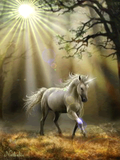

O que a Lady Gaga anda fazendo???
Confira uns Videozinhos por aqui!!!
Gaga Uh Lalá!

O que a Lady Gaga anda fazendo???
Confira uns Videozinhos por aqui!!!
Gaga Uh Lalá!

| Videos | Babados | Confusão | |
|---|---|---|---|
| 1 Filmes Invasão de Privacidade Resgate |
2 Netflix Foto Perigo |
3 Gucci Medo Nasa |